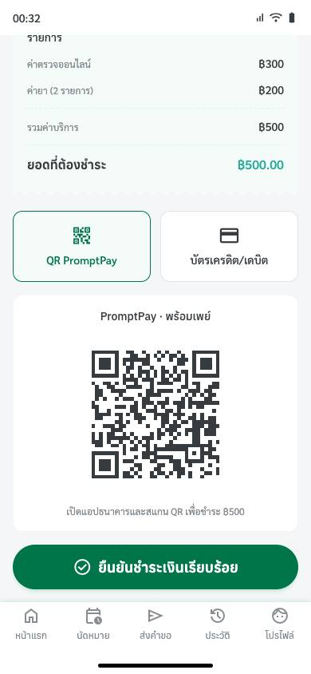

3 · ใหญ่U10 · T5 · H5 ป้องกันความผิดพลาด
QR PromptPay อยู่บนเครื่องที่ต้องใช้สแกน ไม่มีปุ่มบันทึก QR · กด 'ยืนยันชำระเงินเรียบร้อย' ได้เองก่อนจ่ายจริง
- พบโดย
- ป้าสมศรี · คุณฝน · พี่เอก · Mr. Aung (4)
- ข้อเสนอ
- รอทีมตอบ (team-questions.md U10)